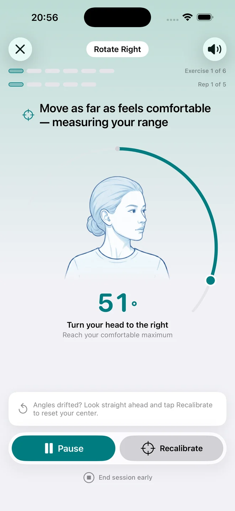
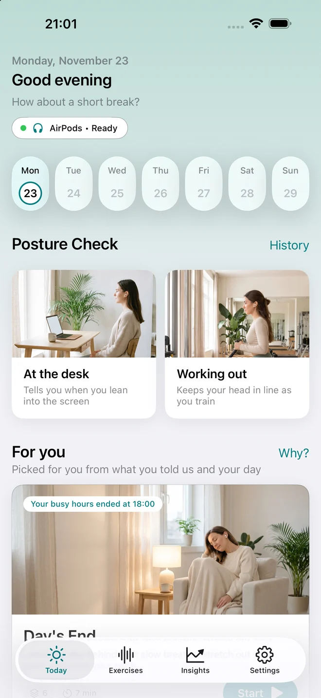
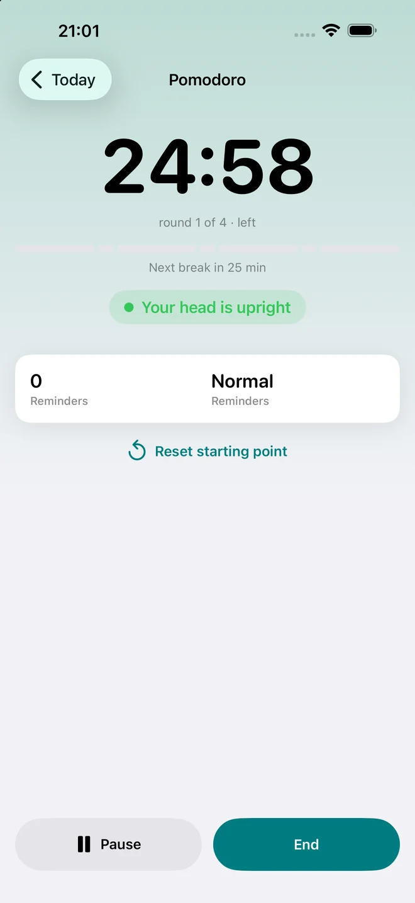

Neck
Turns, side tilts, looking down and up, chin tucks. AirPods measure the angle and count reps; without them, Nodly paces you on a timer.
Short exercises for your neck, breath, eyes, hands and legs, and desk yoga. With your AirPods, Nodly measures your neck moves, follows your posture and lets you know when your head stays down too long.
Download on the App StoreFor iPhone and iPad · With compatible AirPods, or without

Not just your neck
Turns, side tilts, looking down and up, chin tucks. AirPods measure the angle and count reps; without them, Nodly paces you on a timer.

Long exhale, box breathing and even breathing, for 1, 2 or 3 minutes, paced by a drawing and a soft tap.

A two-minute break away from the screen: look far away, blink slowly, then rest with your eyes closed.

Wrist stretches, wrist circles and opening and closing your hands, for days spent on a keyboard and mouse.

Heel raises, toe raises, knee extensions and seated marching, without leaving your chair.

Seated cat-cow, side bend and twist, plus shoulder moves to loosen up between meetings.
Only neck tracking uses AirPods. Everything else works without them.
Measured with your AirPods
The motion sensors in your earbuds follow your head angle. When you reach the target range, Nodly lets you know with a sound and a tap and counts the rep for you. Targets adapt to your own range of motion.
Nodly uses the motion sensors in your earbuds. No camera, no extra device.
Look straight ahead and hold still for a few seconds. Nodly takes this as 0°.
When you reach the target range, Nodly lets you know with a sound and a tap, and counts the rep for you.
0°
Right
Drag to the right until you reach the green range, then come back to center.
Reps: 0


Posture Check
Follows your head while you work, for 30 minutes up to 2 hours, or in Pomodoro rounds of 25 minutes' work and 5 minutes' rest.
If your head drops during standing exercises, Nodly lets you know within seconds. For exercises done lying down, just pause it.
Lock your phone and keep working. You see the time left on the Lock Screen and pause or end from there.
With Siri, from Control Center, or with a Focus automation in Shortcuts.
“Start posture check with Nodly”
Routines
Start with a ready-made routine like Day Opener or Screen Break, or pick moves from the library and put them in your own order. For you on the Today screen suggests one that suits your day and your busiest hours.
Progress
Your streak, your week, and how your time splits across your neck, breath, eyes, hands and legs, at a glance. And as you practise, a little 3D desk tidies itself up.
The details
Your history and routines sync across your iPhone and iPad through your own iCloud.
Neck exercises can run on a timer. The other exercises never need AirPods.
A daily reminder, desk breaks through your busy hours and a weekly summary, each one optional.
Spoken cues, sounds and haptics guide you, so your eyes can stay off the screen.
Dynamic Type, VoiceOver and Reduce Motion, on iPhone and iPad.
English, Turkish, German, Spanish, French and Japanese.
Privacy and trust
Motion data is processed on your phone and raw motion is never stored. No account needed.
Moves should feel slow and comfortable. If something feels off, stop right away. Nodly never pushes you.
Nodly is a wellness app; it doesn't diagnose or treat any condition. If you have a neck condition, check with a health professional before you start.
Legal
No account, and your motion data stays on your device. We collect anonymous usage statistics only if you allow it. No ads, no tracking, no selling of data.
Read the full textNodly is offered as a monthly or yearly subscription, and eligible users get a 7-day free trial. You can cancel any time in your App Store account settings.
Read the full textMove slowly and only within a comfortable range. Stop right away if you feel pain, dizziness or numbness.
Read the full text